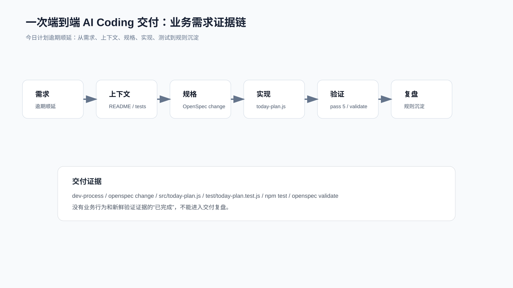
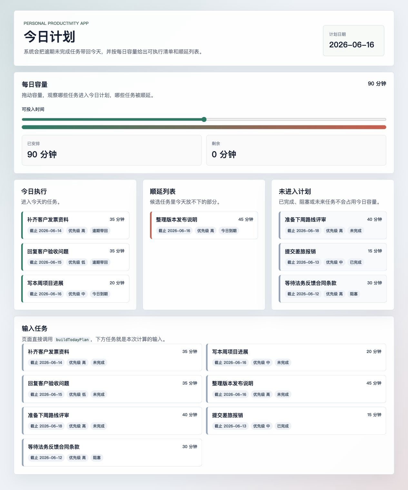

综合实战：一个真实需求的 AI Coding 最佳实践
真实需求不会按工具章节出现。它通常同时牵涉上下文、spec、TDD、debug、Skill、OpenSpec 和验证。
如果这些能力只停留在单点命令，真实需求进来时仍然很容易断链。
下面用同一个产品需求把整条链路走完：
个人效率助手每天生成今日计划时，自动纳入逾期未完成任务，并在每日容量限制下返回顺延列表。
配套代码仓库 DavidDingXu/learn-ai-coding 按一个大仓库组织，仓库根目录下有业务 module 和工具 module。这里使用业务 module：personal-productivity-app。工具 module 里的 CLI、context-pack、verification ledger 可以提供方法样例，但不能替代这一条业务链路。
端到端过程记录在：
learn-ai-coding/personal-productivity-app/dev-process/03-end-to-end-today-plan-delivery.md
这不是工具项目里的命令演示，而是一个可迁移的业务规则需求：有状态、有日期、有优先级、有容量、有测试、有 review 边界。

第一步：把需求翻译成业务边界
原始需求可以很口语：
今日计划别漏掉昨天没做完的任务，但也别把今天排爆。
AI 如果直接改代码，容易把需求扩大成：
做一个任务系统。
做一个日历同步。
做一个提醒服务。
做一个复杂排程算法。
真实开发里，第一步不是写代码，而是限定边界。
本次做：
buildTodayPlan 领域函数。
逾期任务和当天任务候选选择。
done / blocked / future 过滤。
priority / dueDate 排序。
capacityMinutes 容量约束。
items / deferred 输出。
今日计划结果页。
容量调节后即时重算。
本次不做：
完整任务系统页面。
API。
数据库。
账号系统。
提醒系统。
日历同步。
复杂排程优化。
这一步是后续所有工具能发挥作用的前提。
第二步：把上下文交给 AI
给 AI 的上下文不是“你帮我做一下”。
最少应该包含：
README.md
package.json
test/today-plan.test.js
openspec/changes/today-plan-overdue-rollover/proposal.md
openspec/changes/today-plan-overdue-rollover/specs/today-plan/spec.md
openspec/changes/today-plan-overdue-rollover/design.md
openspec/changes/today-plan-overdue-rollover/tasks.md
这些文件分别回答：
项目是什么。
怎么跑测试。
需求为什么做。
行为合同是什么。
实现边界是什么。
任务怎么拆。
如果 AI 只读测试文件，可能知道要实现什么。
但它不知道为什么 UI 只能展示已有领域规则、为什么 blocked 不进入计划、为什么 priority 要优先于 dueDate age。
上下文不是越多越好，而是要覆盖决策所需事实。
第三步：用 OpenSpec 固定需求合同
OpenSpec 本次真实命令链是：
openspec init --tools codex .
openspec new change today-plan-overdue-rollover \
--description "今日计划自动纳入逾期未完成任务，并在每日容量限制下给出顺延列表。" \
--goal "让个人效率助手每天生成可执行的今日计划，避免逾期任务丢失或一天被排爆。" \
--json
openspec instructions proposal --change today-plan-overdue-rollover --json
openspec instructions specs --change today-plan-overdue-rollover --json
openspec instructions design --change today-plan-overdue-rollover --json
openspec instructions tasks --change today-plan-overdue-rollover --json
openspec validate today-plan-overdue-rollover --strict --json --no-interactive
生成的核心文件：
proposal.md
design.md
specs/today-plan/spec.md
tasks.md
最关键的不是文件名，而是它们让需求变成可审合同。
proposal 写为什么做。
spec 写 SHALL / MUST 和 scenario。
design 写技术取舍和不做什么。
tasks 写每一步怎么完成。
第四步：先红灯再实现
测试先表达业务行为：
逾期任务进入今日计划，且排在当天任务前。
done / blocked 不进入今日计划。
容量不足时放不下的任务进入 deferred。
逾期任务按 priority 优先于 dueDate age。
非法日期、负容量、负估时被拒绝。
第一次运行：
npm test
红灯：
ERR_MODULE_NOT_FOUND: Cannot find module 'src/today-plan.js'
这个红灯把实现范围钉住了：
要新增 src/today-plan.js。
测试期望不用改。
没有理由新增数据库或外部服务。页面展示必须复用 `buildTodayPlan`，不能另写一套规则。
第五步：小 diff 实现领域规则
实现文件：
src/today-plan.js
核心函数：
export function buildTodayPlan({ date, capacityMinutes = 0, tasks = [] } = {}) {
// 过滤、排序、容量选择、输出 items/deferred
}
核心实现边界：
不读取系统时间。
不访问网络。
不写文件。
不引入依赖。
不做持久化。
页面只展示 `buildTodayPlan` 的结果，不接后端。
这就是小 diff 的意义：只改当前需求需要的地方。
第六步：用 Superpowers 约束过程
本次 Superpowers 没有替代 OpenSpec。
它约束的是执行纪律：
test-driven-development：实现前先红灯。
systematic-debugging：测试失败时先找根因。
requesting-code-review：完成后按行为风险审查。
verification-before-completion：完成前跑新鲜验证。
receiving-code-review：处理反馈时不扩大 scope。
这里也核对了当前入口：本机 brainstorm、write-plan、execute-plan 命令文件都标了 deprecated，当前写法以 Skill 触发为准。
所以不能把旧命令当成当前推荐路径。
第七步：验证不是一句话
本次验证有四层。
OpenSpec strict validate：
openspec validate today-plan-overdue-rollover --strict --json --no-interactive
结果：
passed: 1
failed: 0
业务测试：
npm test
结果：
tests 7
pass 7
fail 0
OpenSpec apply 进度：
openspec instructions apply --change today-plan-overdue-rollover --json
结果：
total: 8
complete: 8
remaining: 0
state: all_done
这才叫完成证据。
只写“已完成，测试通过”，reviewer 不知道通过了什么，也不知道需求合同是否仍然有效。
最终页面也要验证。启动本地页面：
npm run dev
打开：
http://127.0.0.1:4173
默认 90 分钟容量下，页面应该展示：
今日执行：补齐客户发票资料、回复客户验收问题、写本周项目进展
顺延列表：整理版本发布说明
未进入计划：准备下周路线评审、提交差旅报销、等待法务反馈合同条款
把容量调到 60 分钟后，页面应该重新计算：
今日执行：补齐客户发票资料、写本周项目进展
顺延列表：回复客户验收问题、整理版本发布说明
已安排：55 分钟
剩余：5 分钟
这一步不是把样例扩成完整产品，而是确认业务规则确实落到了用户可见结果里。

第八步：Review 看业务风险
这次 review 应该盯这些问题：
done / blocked 是否被误收？
future 是否被误收？
overdue 是否排在 due-today 前？
priority 是否先于 dueDate age？
capacity 是否可能超限？
deferred 是否保留放不下的任务？
remainingMinutes 是否计算正确？
实现是否依赖系统时间或外部副作用？
这些问题比“代码是否优雅”更重要。
因为真实用户只关心：今天看到的计划是否可信。
第九步：复盘沉淀可迁移规则
这次需求之后，值得沉淀的不是 today-plan 这个函数名。
真正可迁移的是：
有状态、日期、优先级、容量边界的需求，先写 spec 再实现。
业务实战必须先写用户可见行为，不要用工具命令冒充业务需求。
OpenSpec 实战必须有真实 CLI 命令和 validate 输出。
Superpowers 实战必须写当前 Skill 入口和触发条件。
完成前必须重新跑验证命令，不能引用旧输出。
这些规则可以迁移到：
订单超时关闭。
工单 SLA 升级。
审批任务催办。
会员权益到期提醒。
账单分期滚动。
给 AI 的完整执行指令
真实项目里可以这样交给 AI：
需求：今日计划自动纳入逾期未完成任务，并在每日容量限制下返回顺延列表。
请先读取：
- README.md
- package.json
- openspec/changes/today-plan-overdue-rollover/proposal.md
- openspec/changes/today-plan-overdue-rollover/specs/today-plan/spec.md
- openspec/changes/today-plan-overdue-rollover/design.md
- openspec/changes/today-plan-overdue-rollover/tasks.md
- test/today-plan.test.js
执行要求：
1. 以 tasks.md 为 source of truth。
2. 实现前运行 npm test，记录红灯。
3. 先实现 src/today-plan.js；页面展示必须复用该函数，不接数据库、API 或外部依赖。
4. 如果测试失败，按 systematic-debugging 先定位第一个失败信号。
5. 完成后运行 npm test。
6. 运行 openspec validate today-plan-overdue-rollover --strict --json --no-interactive。
7. 运行 openspec instructions apply --change today-plan-overdue-rollover --json。
8. 如果改动影响页面展示，运行 npm run dev 并检查 http://127.0.0.1:4173。
9. 汇报修改文件、验证结果和残余风险。
这比“帮我实现一下”稳定得多。
配套资料
- 端到端过程记录：
learn-ai-coding/personal-productivity-app/dev-process/03-end-to-end-today-plan-delivery.md - OpenSpec 过程记录：
learn-ai-coding/personal-productivity-app/dev-process/01-openspec-today-plan-rollover.md - Superpowers 过程记录：
learn-ai-coding/personal-productivity-app/dev-process/02-superpowers-today-plan-workflow.md - OpenSpec 变更包：
learn-ai-coding/personal-productivity-app/openspec/changes/today-plan-overdue-rollover/ - 领域实现：
learn-ai-coding/personal-productivity-app/src/today-plan.js - 结果页：
learn-ai-coding/personal-productivity-app/index.html - 页面渲染：
learn-ai-coding/personal-productivity-app/src/ui.js - 页面演示数据：
learn-ai-coding/personal-productivity-app/src/today-plan-demo.js - 业务测试：
learn-ai-coding/personal-productivity-app/test/today-plan.test.js - 页面演示测试：
learn-ai-coding/personal-productivity-app/test/today-plan-demo.test.js